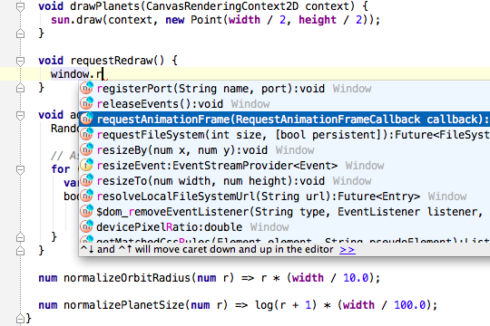
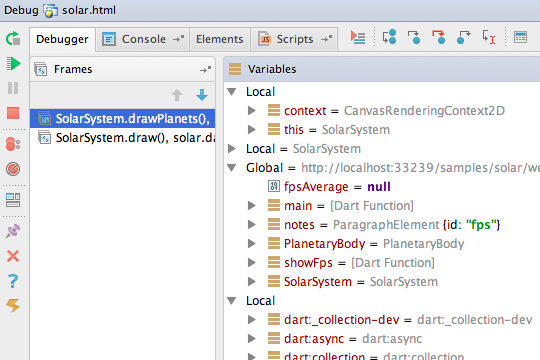
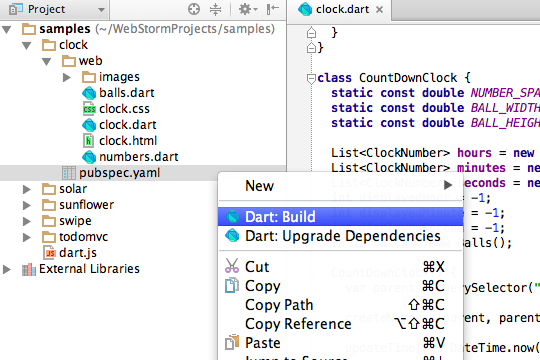
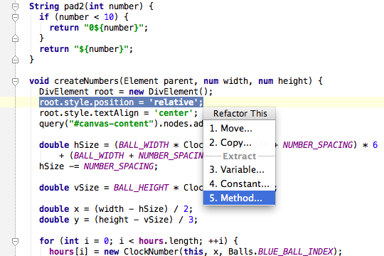
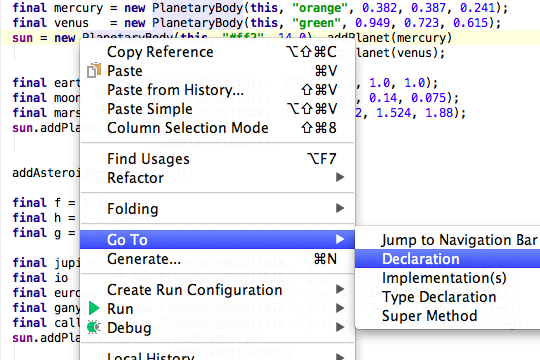
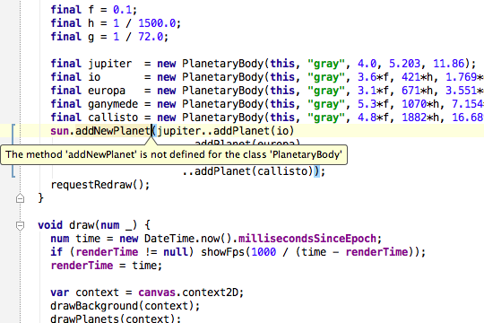
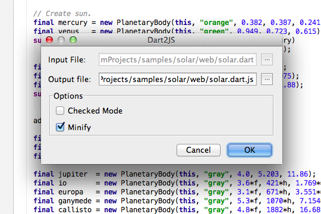
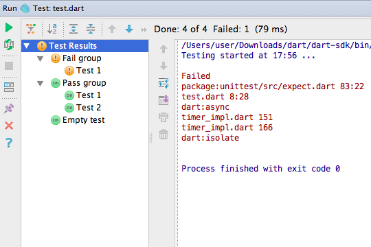

JetBrain 的 Dart 插件
用于 WebStorm、 IntelliJ IDEA、 PhpStorm、 PyCharm、 和 RubyMine 的 Dart 插件
给 WebStorm JavaScript IDE 提供的 Dart 插件 支持了 Dart 语言。该插件还支持 IntelliJ 平台的 IDE：包 含 IntelliJ IDEA、 PhpStorm、 PyCharm、 和 RubyMine。 这些 IDE 提供了智能的代码辅助并且可以让开发者直接在 IDE中 调试、运行和测试 Dart 应用。
对于寻找完整的开发功能的开发者， WebStorm 和其他 JetBrains IDE 提供了和 VCS 的集成，支持可配置的部署， 以及 支持 Web 开发的编辑器。
插件功能
智能语法高亮和代码辅助
IDE 理解 Dart 语法并自动提供合适的代码辅助。 支持自定义格式化和 高亮 Dart 代码：

用 Dartium 调试 Dart web 应用
只需点击一次文件的上下文菜单就可以调试 Dart web 应用。 IDE 支持启动 Dartium 并可以访问调试器的全部功能。

Package 管理
在 IDE 中直接使用 pub：在 pubspec.yaml 文件上下文菜单中包含 更新依赖项和 build 行为：

智能重构
智能重构可以让你安全的重命名、提取函数、变 量和常量：

代码导航
在 IDE 中包含强大的代码导航功能：跳到定义位置；查找类、 变量、函数、方法的调用位置；跳到实现位置； 跳到符号定义位置；跳到类和查看结构化视图：

代码验证和快速修复提示
代码静态分析工具可以检测错误信息并且提供修复建议：

Dart-to-JS 编译器
在 Dart 代码文件上下文菜单中包含转换为 JavaScript 的 选项。同时还可以选择压缩代码：

Dart 单元测试
IDE 支持 Dart 单元测试：
